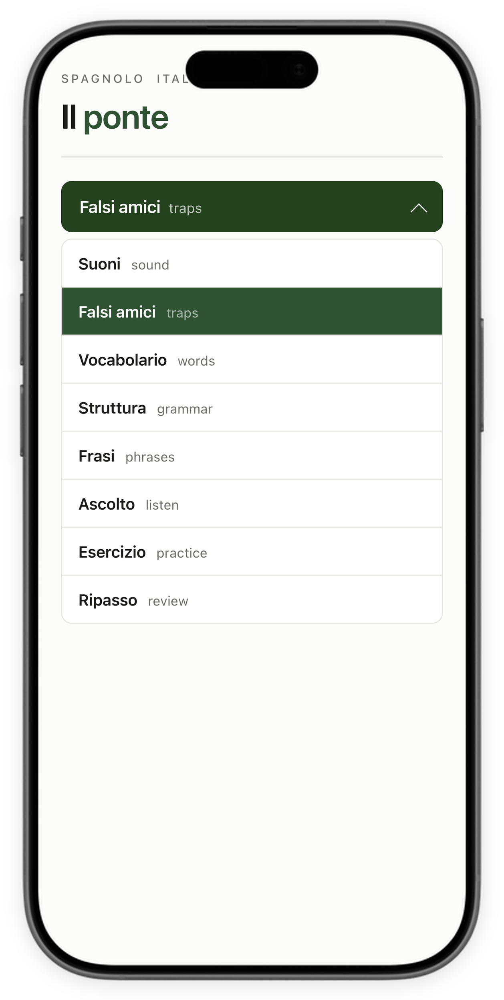
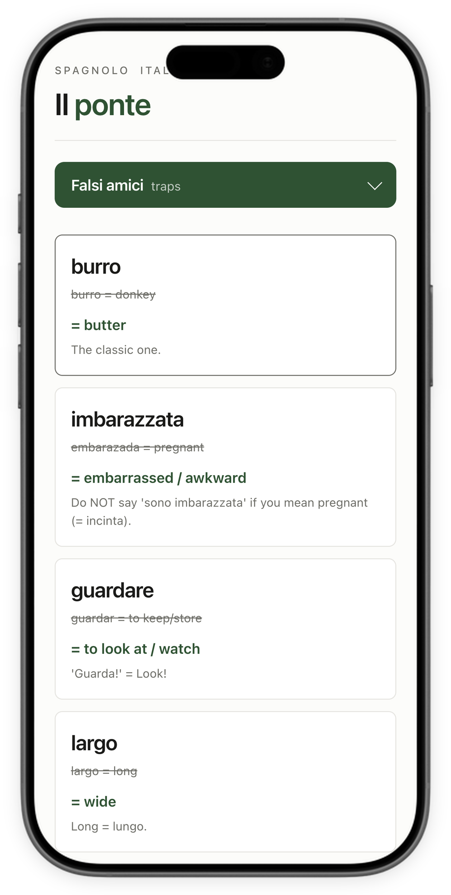
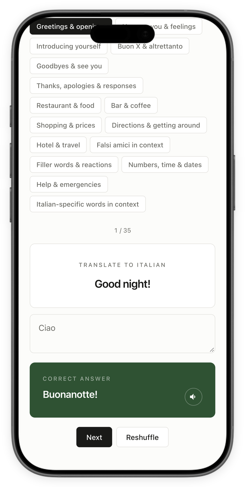
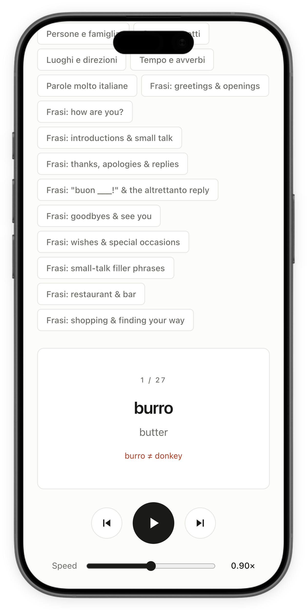

App to learn Italian as a Spanish speaker
An app I built to learn speaking Italian ahead of a vacation there, tailored to me as a Spanish speaker. I designed the exercises backed up by language learning research, and used Claude to perform user interviews on myself.



